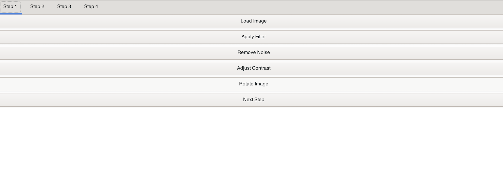

An overview of our interface !

'Load Image' button :
No need to search or navigate endlessly!
From this window, you can browse your files, quickly locate the image of your choice, and select it effortlessly. Once the image is selected, you will have access to all the tools and processing options available on our interface.
'Apply filter' button :
When you press this button, you can apply a variety of implemented filters, including:
Grayscale: Turn your image into a classic monochrome masterpiece.
Black and White Filter: Achieve a timeless and elegant look by converting your image into sharp contrasts of black and white.
'Remove Noise' button :
When you press this button, you can apply a removing noise filter.
It adds a creative touch with controlled noise effects for a unique texture.
and enables to smooth out details with professional-grade blurring.
'Adjust Contrast' button :
When you press this button, you can easily adjust the contrasts of the image.
'Rotate Image' button :
When you press this button, you can apply a automatic rotation of the image.
With just one press of this button, our interface goes to work analyzing your selected image to detect if it’s properly aligned.
The system intelligently calculates the necessary adjustments and rotates it by the perfect angle to make it straight.